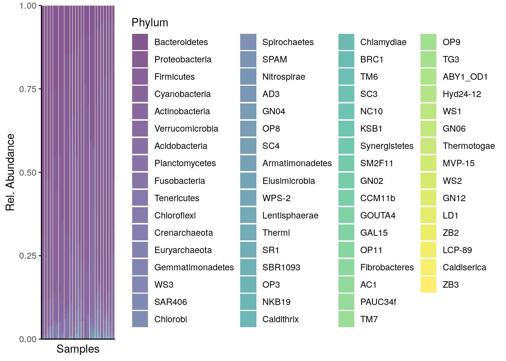
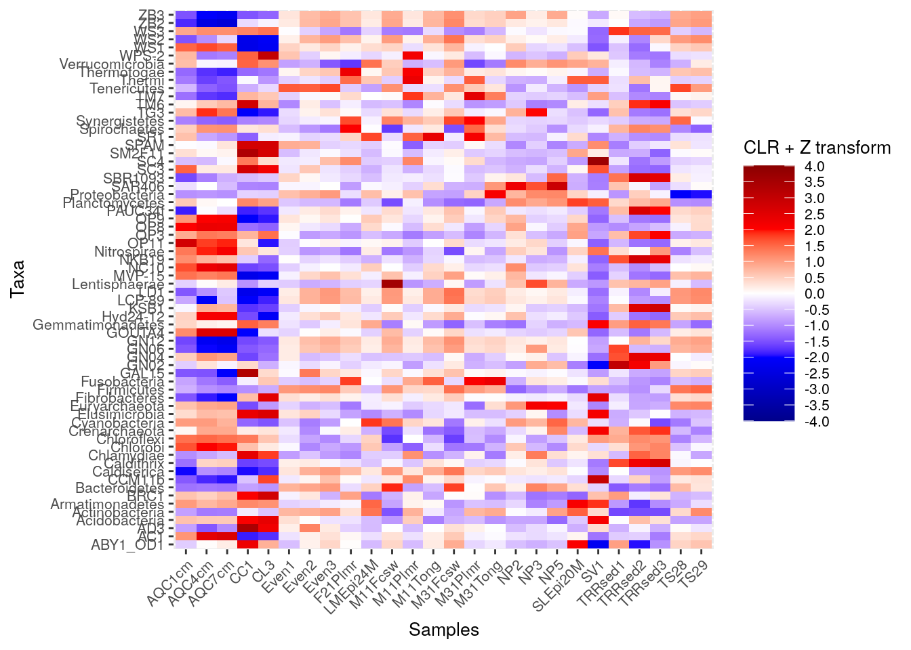
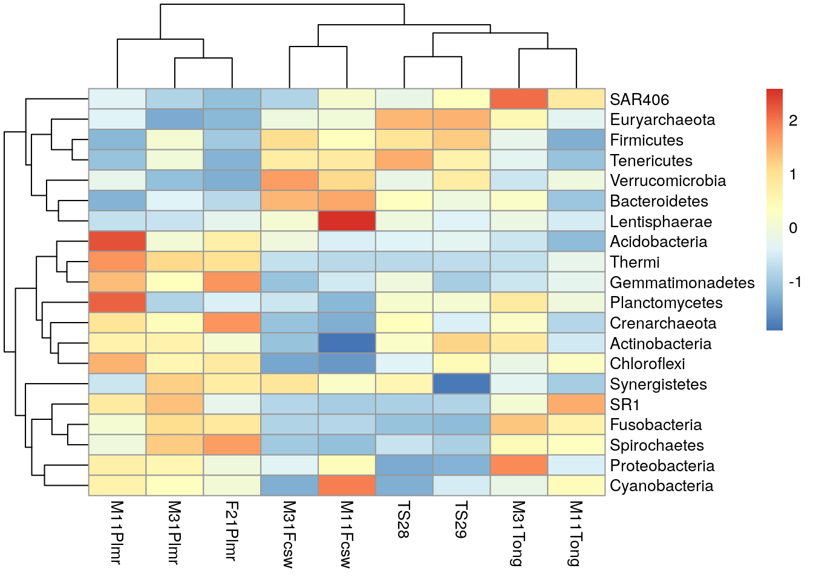
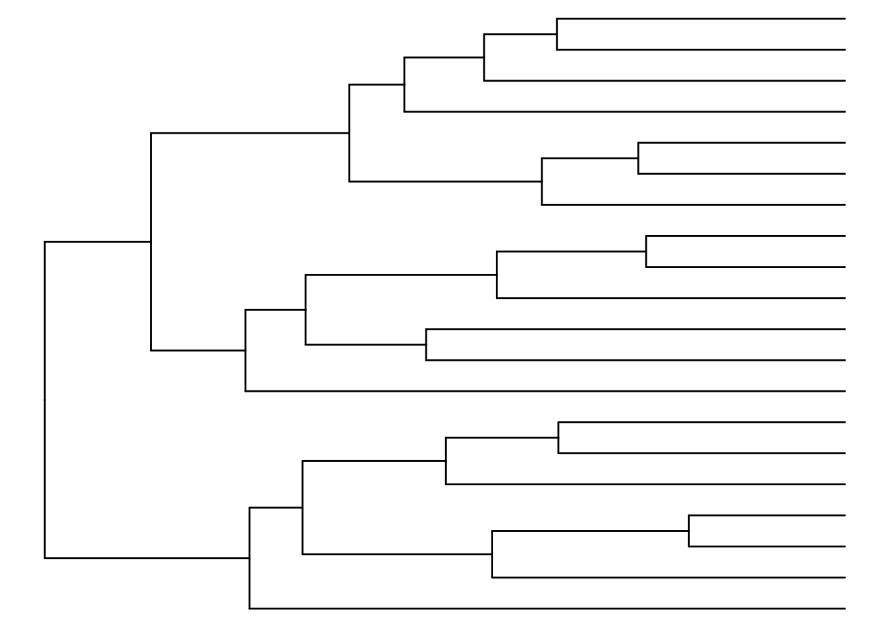
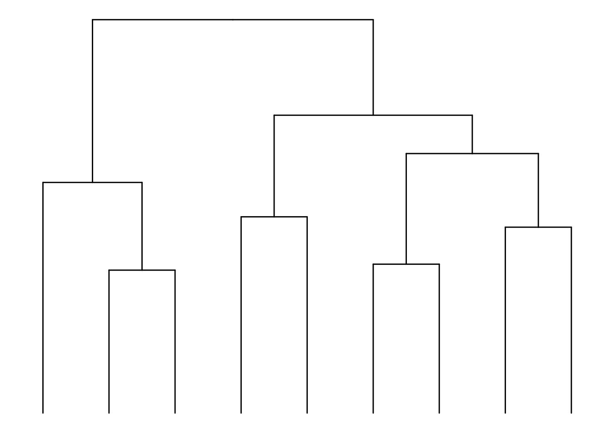
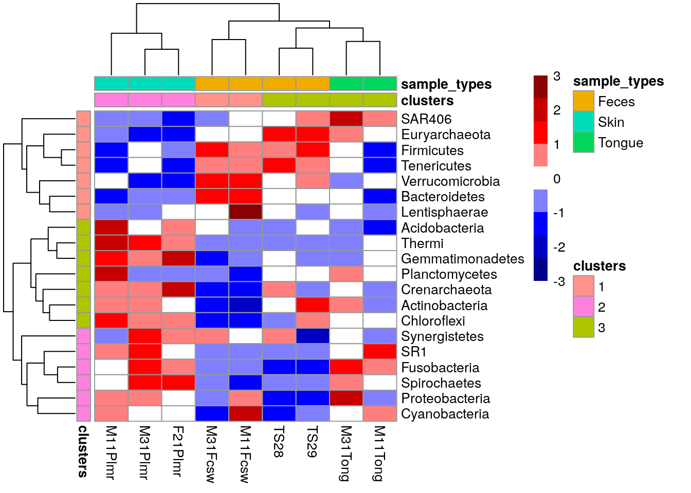

8 Community Composition
8.1 Visualizing taxonomic composition
8.1.1 Composition barplot
A typical way to visualize microbiome composition is by using composition barplot. In the following, relative abundance is calculated and top taxa are retrieved for the Phylum rank. Thereafter, the barplot is visualized ordering rank by abundance values and samples by “Bacteroidetes”:
library(miaViz)
# Computing relative abundance
tse <- transformAssay(tse, assay.type = "counts", method = "relabundance")
# Getting top taxa on a Phylum level
tse_phylum <- mergeFeaturesByRank(tse, rank ="Phylum", onRankOnly=TRUE)
top_taxa <- getTop(tse_phylum,top = 5, assay.type = "relabundance")
# Renaming the "Phylum" rank to keep only top taxa and the rest to "Other"
phylum_renamed <- lapply(rowData(tse)$Phylum,
function(x){if (x %in% top_taxa) {x} else {"Other"}})
rowData(tse)$Phylum <- as.character(phylum_renamed)
# Visualizing the composition barplot, with samples order by "Bacteroidetes"
plotAbundance(tse_phylum, assay.type="relabundance", rank = "Phylum",
order_rank_by="abund",
order_sample_by = "Bacteroidetes")
8.1.2 Composition heatmap
Community composition can be visualized with heatmap, where the horizontal axis represents samples and the vertical axis the taxa. Color of each intersection point represents abundance of a taxon in a specific sample.
Here, abundances are first CLR (centered log-ratio) transformed to remove compositionality bias. Then Z transformation is applied to CLR-transformed data. This shifts all taxa to zero mean and unit variance, allowing visual comparison between taxa that have different absolute abundance levels. After these rough visual exploration techniques, we can visualize the abundances at Phylum level.
library(ggplot2)
# Add clr-transformation on samples
tse_phylum <- transformAssay(tse_phylum, assay.type = "counts",
method = "relabundance", pseudocount = 1)
tse_phylum <- transformAssay(tse_phylum, assay.type = "relabundance",
method = "clr", pseudocount = TRUE)
# Add z-transformation on features (taxa)
tse_phylum <- transformAssay(tse_phylum, assay.type = "clr",
MARGIN = "features",
method = "z", name = "clr_z")Visualize as heatmap.
# Melt the assay for plotting purposes
df <- meltSE(tse_phylum, assay.type = "clr_z")
# Determines the scaling of colours
maxval <- round(max(abs(df$clr_z)))
limits <- c(-maxval, maxval)
breaks <- seq(from = min(limits), to = max(limits), by = 0.5)
colours <- c("darkblue", "blue", "white", "red", "darkred")
# Creates a ggplot object
ggplot(df, aes(x = SampleID, y = FeatureID, fill = clr_z)) +
geom_tile() +
scale_fill_gradientn(name = "CLR + Z transform",
breaks = breaks, limits = limits, colours = colours) +
theme(text = element_text(size=10),
axis.text.x = element_text(angle=45, hjust=1),
legend.key.size = unit(1, "cm")) +
labs(x = "Samples", y = "Taxa")
pheatmap is a package that provides methods to plot clustered heatmaps.
library(pheatmap)
# Takes subset: only samples from feces, skin, or tongue
tse_phylum_subset <- tse_phylum[ , tse_phylum$SampleType %in% c("Feces", "Skin", "Tongue") ]
# Add clr-transformation
tse_phylum_subset <- transformAssay(tse_phylum_subset,
method = "clr",
pseudocount = 1)
tse_phylum_subset <- transformAssay(tse_phylum_subset, assay.type = "clr",
MARGIN = "features",
method = "z", name = "clr_z")
# Get n most abundant taxa, and subsets the data by them
top_taxa <- getTop(tse_phylum_subset, top = 20)
tse_phylum_subset <- tse_phylum_subset[top_taxa, ]
# Gets the assay table
mat <- assay(tse_phylum_subset, "clr_z")
# Creates the heatmap
pheatmap(mat)
We can create clusters by hierarchical clustering and add them to the plot.
library(ggtree)
# Plot taxa tree
taxa_tree <- ggtree(taxa_tree) +
theme(plot.margin=margin(0,0,0,0)) # removes margins
# Get order of taxa in plot
taxa_ordered <- get_taxa_name(taxa_tree)
taxa_tree
Based on phylo tree, we decide to create three clusters.
# Creates clusters
taxa_clusters <- cutree(tree = taxa_hclust, k = 3)
# Converts into data frame
taxa_clusters <- data.frame(clusters = taxa_clusters)
taxa_clusters$clusters <- factor(taxa_clusters$clusters)
# Order data so that it's same as in phylo tree
taxa_clusters <- taxa_clusters[taxa_ordered, , drop = FALSE]
# Prints taxa and their clusters
taxa_clusters
## clusters
## Phylum:Chloroflexi 3
## Phylum:Actinobacteria 3
## Phylum:Crenarchaeota 3
## Phylum:Planctomycetes 3
## Phylum:Gemmatimonadetes 3
## Phylum:Thermi 3
## Phylum:Acidobacteria 3
## Phylum:Spirochaetes 2
## Phylum:Fusobacteria 2
## Phylum:SR1 2
## Phylum:Cyanobacteria 2
## Phylum:Proteobacteria 2
## Phylum:Synergistetes 2
## Phylum:Lentisphaerae 1
## Phylum:Bacteroidetes 1
## Phylum:Verrucomicrobia 1
## Phylum:Tenericutes 1
## Phylum:Firmicutes 1
## Phylum:Euryarchaeota 1
## Phylum:SAR406 1# Hierarchical clustering
sample_hclust <- hclust(dist(t(mat)), method = "complete")
# Creates a phylogenetic tree
sample_tree <- as.phylo(sample_hclust)
# Plot sample tree
sample_tree <- ggtree(sample_tree) + layout_dendrogram() +
theme(plot.margin=margin(0,0,0,0)) # removes margins
# Get order of samples in plot
samples_ordered <- rev(get_taxa_name(sample_tree))
sample_tree
# Creates clusters
sample_clusters <- factor(cutree(tree = sample_hclust, k = 3))
# Converts into data frame
sample_data <- data.frame(clusters = sample_clusters)
# Order data so that it's same as in phylo tree
sample_data <- sample_data[samples_ordered, , drop = FALSE]
# Order data based on
tse_phylum_subset <- tse_phylum_subset[ , rownames(sample_data)]
# Add sample type data
sample_data$sample_types <- unfactor(colData(tse_phylum_subset)$SampleType)
sample_data
## clusters sample_types
## M11Plmr 2 Skin
## M31Plmr 2 Skin
## F21Plmr 2 Skin
## M31Fcsw 1 Feces
## M11Fcsw 1 Feces
## TS28 3 Feces
## TS29 3 Feces
## M31Tong 3 Tongue
## M11Tong 3 TongueNow we can create heatmap with additional annotations.
# Determines the scaling of colorss
# Scale colors
breaks <- seq(-ceiling(max(abs(mat))), ceiling(max(abs(mat))),
length.out = ifelse( max(abs(mat))>5, 2*ceiling(max(abs(mat))), 10 ) )
colors <- colorRampPalette(c("darkblue", "blue", "white", "red", "darkred"))(length(breaks)-1)
pheatmap(mat, annotation_row = taxa_clusters,
annotation_col = sample_data,
breaks = breaks,
color = colors)
In addition, there are also other packages that provide functions for more complex heatmaps, such as iheatmapr and ComplexHeatmap (Gu 2022). sechm package provides wrapper for ComplexHeatmap and its usage is explained in chapter Chapter 18 along with the pheatmap package for clustered heatmaps.